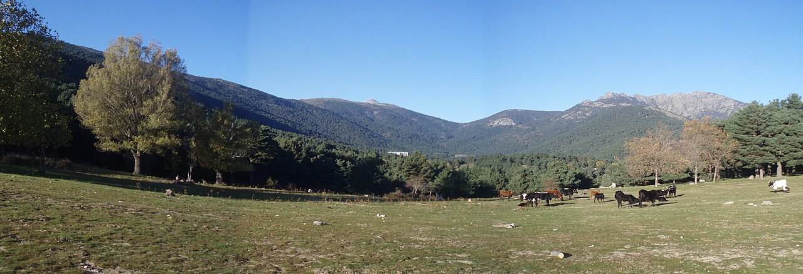

Valle de la Fuenfría (Navacerrada y Cercedilla)
El valle de la Fuenfría, entre Navacerrada y Cercedilla, es un corredor boscoso ideal para iniciarse en el senderismo madrileño. Destaca el Camino Schmidt, una senda histórica que une el puerto de Navacerrada con el albergue del valle (unos 12 km, dificultad moderada), y la antigua calzada romana que atraviesa pinar y robledal con vistas a las cumbres de Siete Picos y el Montón de Trigo.
